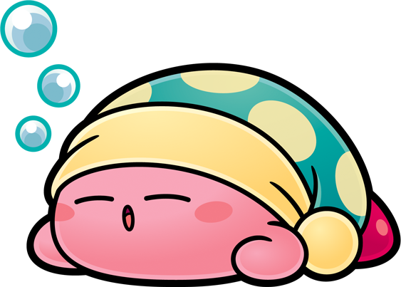

The Things
That Keep Me Going
Four hobbies. Very little in common. Yet somehow they all feel like home.
1. 🎮 Gaming
Gaming has been a constant in my life for as long as I can remember. There's something uniquely satisfying about stepping into a world that plays by its own rules — where the problems are solvable, the stakes feel real, and the rewards are immediate. Whether it's an open-world RPG that swallows entire weekends, or a quick competitive match before dinner, games are my way of switching off the noise.
As an IT student, I've started seeing games differently too. The logic behind game mechanics, the architecture of game worlds, the way user interfaces guide you without you ever noticing — it's all quietly teaching me things I'll use in my degree. What started as a hobby is slowly becoming a lens.

2. 😴 Sleeping
Yes, sleeping is a hobby. And I will defend this with my whole chest. In a world that glorifies hustle and early mornings, choosing to rest — deliberately, unapologetically — is practically an act of rebellion. Sleep is where my brain reorganises itself, where ideas that were tangled in the afternoon somehow make perfect sense by morning.
I've come to treat sleep less like a necessity and more like a ritual. A good nap can reset a bad day. A long Sunday sleep-in is its own kind of luxury. There is absolutely nothing wrong with being very, very good at resting.

3. 🌍 Geography
I am fascinated by the world — not just in a vague, abstract sense, but concretely: the shapes of countries, the reasons borders exist where they do, why rivers determine where cities grow, and how a mountain range can split an entire culture in two. Geography, to me, is really just the story of everything, told through land.
I'll happily lose an hour reading about landlocked countries, debating which ocean borders are actually contested, or tracing the path of a river I've never heard of. It's the kind of curiosity that doesn't have a practical purpose — and that's exactly why I love it. The world is enormous and strange and I want to know all of it.

4. 🧵 Embroidery
Embroidery is the hobby that surprises people most when I mention it — but it makes perfect sense to me. In a life spent looking at screens, there is something deeply grounding about working with your hands. Every stitch is a small, deliberate decision. There's no ctrl+Z. You commit to the thread, and you make it work.
It's also meditative in a way that nothing else quite matches. The repetition of a stitch, the slow emergence of a pattern, the satisfaction of a finished piece — it's the opposite of instant gratification, and that's the whole point. Embroidery has taught me patience in a way that no app or course ever could.